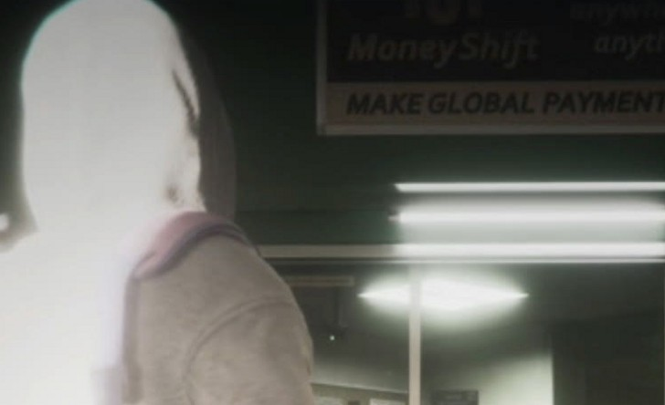
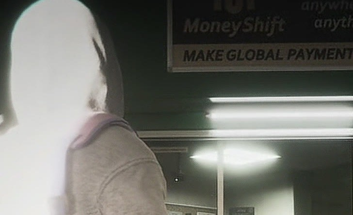

PlayFX
Play your PS5 or PS4 on your Mac, with the picture cleaned up, upscaled and sharpened on its GPU.
Download for Mac
For Macs with Apple silicon on macOS 13 or later. Signed and notarized, and it updates itself.

